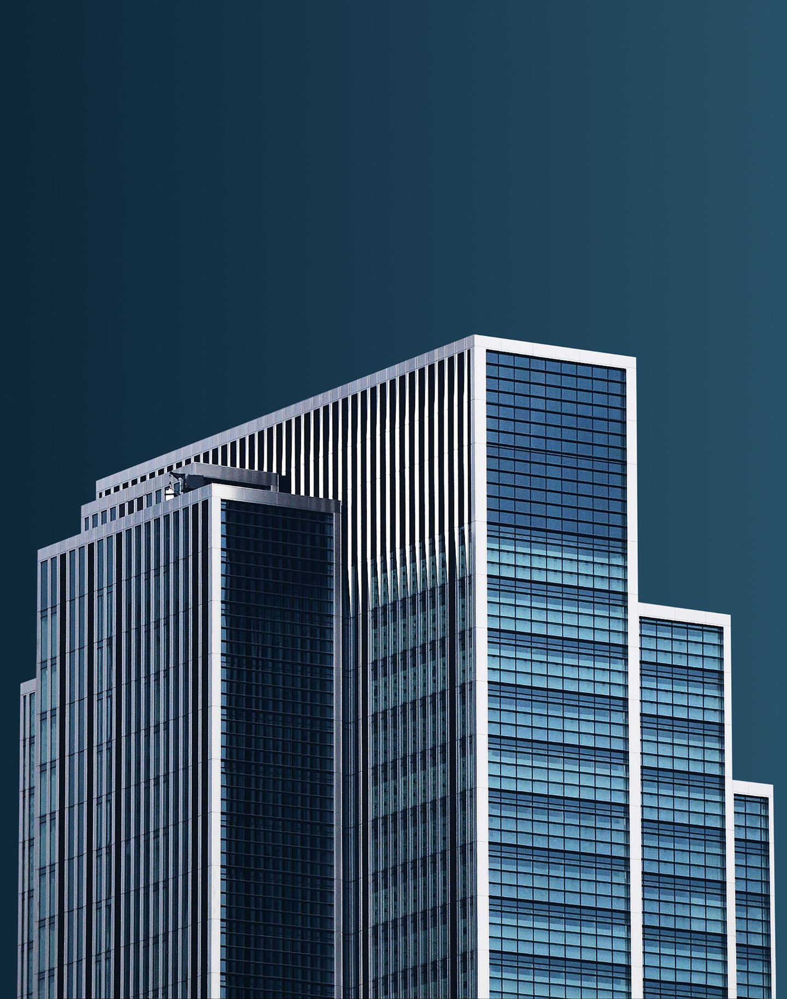

왜 T-ARCH인가
데이터를 의심하는 시스템
모든 설비 진단은 "센서가 진실을 말한다"는 가정 위에 서 있습니다. T-ARCH는 그 가정부터 검증합니다. 센서가 고장 나면 고장조차 "정상"으로 보이기 때문입니다.
기존 BMS · FMS
센서가 멈춘 줄도 모른 채, 관리자는 정상 화면을 봅니다. 고장은 사고가 난 뒤에야 드러납니다.
T-ARCH
값이 움직이지 않는 센서, 갑자기 튀는 값, 물리적으로 불가능한 범위 — 데이터의 거짓말부터 잡아냅니다.
직접 해보기 — 센서를 고장 내보세요
예시 · Demonstration 버튼을 누르면 센서값이 한 곳에 고정됩니다작동 방식
진단에서 시공까지, 한 흐름으로
T-ARCH의 진단이 시작점입니다. 이상이 확인되면 우선순위와 견적으로 정리되고, 검증된 시설업체가 정확한 진단서를 들고 방문합니다.
감지
이미 설치된 DDC·BMS에 읽기 전용으로 연결해 설비 데이터를 수집합니다. 어떤 브랜드든, 교체나 추가 공사 없이 시작합니다.
READ-ONLY 연결우선순위 · 견적
AI 진단 룰 11종이 이상을 찾아 심각도와 비용 기준으로 정리합니다. "지금 고칠 것"과 "지켜봐도 되는 것"을 구분하고, 필요한 조치는 견적으로 만듭니다.
점검 권장 TOP 3연결 · 시공
검증된 계장·시설업체가 어디가 왜 문제인지 적힌 진단서를 들고 방문합니다. 수리 이력은 건물의 기록으로 차곡차곡 남습니다.
검증된 협력망데이터 흐름
현장 설비의 신호가 어떻게 진단을 거쳐 시공으로 이어지는지
자세히 보기
더 알아보기
필요한 주제만 골라서 보세요.
누구를 위한 플랫폼인가
건물과 시설업체, 양쪽 모두의 도구
건물주 · 시설관리자
숨은 고장을
먼저 압니다
- 설비사고 한 건 예방이 1년 구독료보다 큽니다 — 사고 이후가 아니라 사고 이전에 쓰는 비용입니다.
- 매일 아침 "오늘 점검 권장 TOP 3"만 확인하면 됩니다. 47개 경보로 압도하지 않습니다.
- 점검 일지·교대 인수인계가 자동으로 기록됩니다. 입력 노동 없이.
계장업체 · FM 운영사
진단이 끝난,
정확한 일감
- 어디가 왜 문제인지 진단서와 함께 의뢰가 옵니다. 출동 전에 이미 압니다.
- 일회성 시공을 매달 쌓이는 관리 수익으로 — 사업 구조가 바뀝니다.
- 원격 진단으로 기술자 한 명이 더 많은 건물을 맡습니다. 인력난의 실질적 해법입니다.
호환성
어떤 브랜드가 설치돼 있든, T-ARCH는 연결됩니다.
교체 없이, 추가 공사 없이.
왜 합리적인가
설비사고 한 건이면 수백만 원.
막으면 구독료 이상입니다.
건물 규모를 움직여 보세요. 사고 한 건의 추정 비용과 1년 구독료를 비교합니다.
※ 사고 비용은 냉동기·펌프·공조 설비의 평균 긴급수리·가동중단 손실을 보수적으로 가정한 예시입니다. 실제 금액은 현장별로 다릅니다.
요금
건물 규모에 맞는 요금 하나로
진단부터 업체 연결까지
사고가 난 뒤 치르는 비용이 아니라, 사고가 나기 전에 드는 비용입니다.
소형
연면적 ~5,000㎡ · 관제 ~100pt
VAT 별도 · 약정 없음
무료 진단 1개월 포함- AI 진단 룰 11종 상시 감시
- 점검 권장 TOP 3 · 자동 점검 일지
- 심각도별 이메일 알림
중형
연면적 ~15,000㎡ · 관제 ~300pt
VAT 별도 · 약정 없음
무료 진단 1개월 포함- 소형의 모든 기능
- 교대 인수인계 자동 정리
- 시설업체 견적 연결
대형
연면적 15,000㎡+ · 관제 300pt+
VAT 별도 · 규모별 맞춤
무료 진단 1개월 포함- 중형의 모든 기능
- 다중 건물 통합 관제
- 현장 맞춤 진단 룰 설계
모든 요금은 월 구독 · 건물 기준 최종가 · VAT 별도
진단 엔진
11가지 시선으로 설비를 봅니다
카드를 누르면 각 룰이 잡아내는 고장을 볼 수 있습니다. 데이터가 없으면 무리하게 단정하지 않고 건너뜁니다.
시작하기